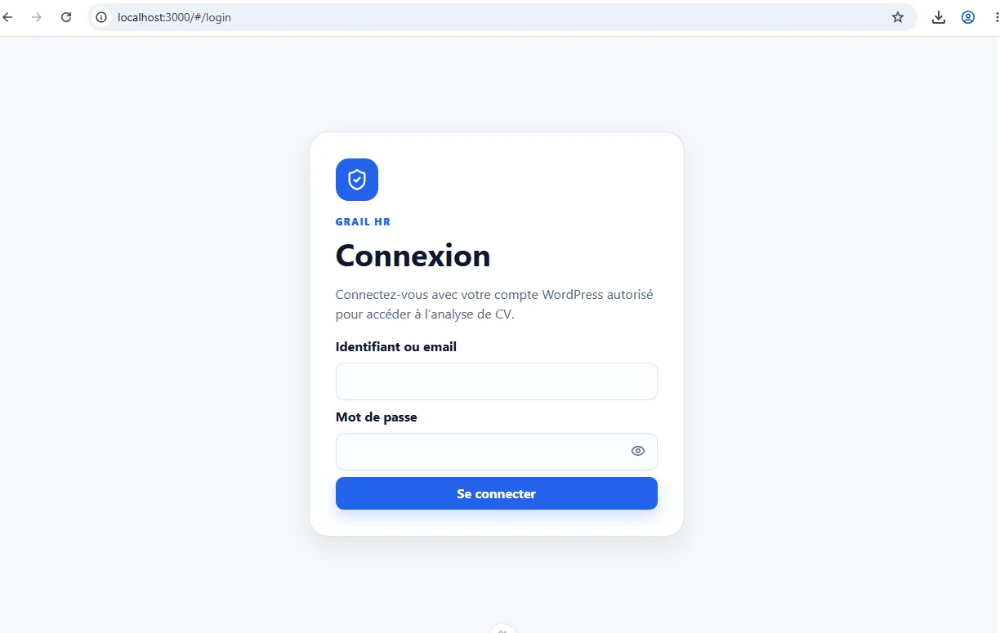
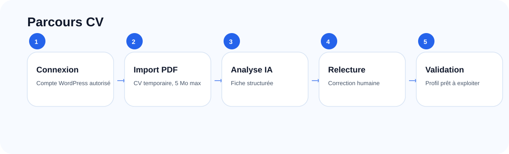
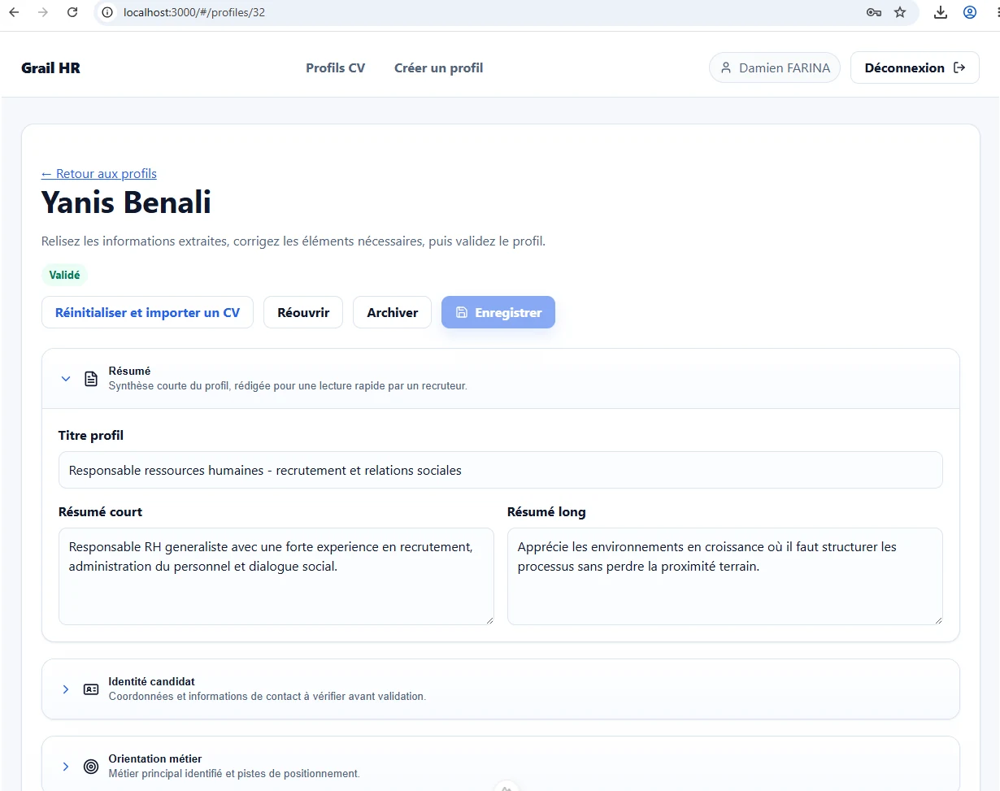

01
Se connecter
L’utilisateur se connecte avec un compte WordPress autorisé. L’accès Grail HR dépend d’un statut actif et d’un niveau d’accès.

Le parcours met en avant une logique simple : automatiser la structuration, puis garder la décision et la validation côté humain.

L’utilisateur se connecte avec un compte WordPress autorisé. L’accès Grail HR dépend d’un statut actif et d’un niveau d’accès.

La page des profils permet de retrouver les candidats importés, filtrer les statuts et ouvrir une fiche.

Le prototype permet de créer un profil depuis un CV PDF ou manuellement.

L’analyse produit un résumé, une identité, une orientation métier et des sections détaillées modifiables.

Expériences, formations, compétences et outils sont organisés en blocs repliables pour faciliter la relecture.